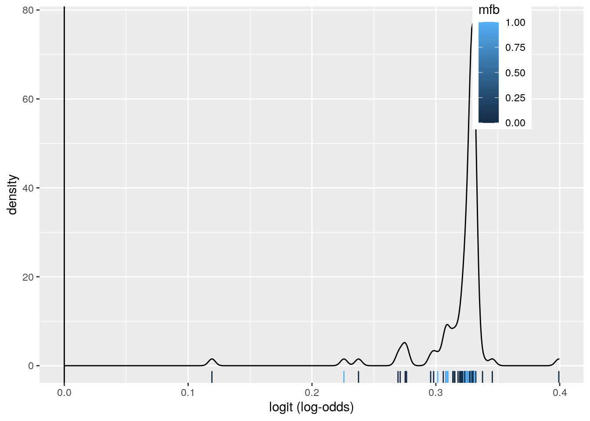

Project 2
library(tidyverse)## ── Attaching packages ───────────────────────────────────────────────────────────── tidyverse 1.3.0 ──## ✓ ggplot2 3.3.2 ✓ purrr 0.3.4
## ✓ tibble 3.0.3 ✓ dplyr 1.0.1
## ✓ tidyr 1.1.1 ✓ stringr 1.4.0
## ✓ readr 1.3.1 ✓ forcats 0.5.0## ── Conflicts ──────────────────────────────────────────────────────────────── tidyverse_conflicts() ──
## x dplyr::filter() masks stats::filter()
## x dplyr::lag() masks stats::lag()library(lmtest)## Loading required package: zoo##
## Attaching package: 'zoo'## The following objects are masked from 'package:base':
##
## as.Date, as.Date.numericclass_diag <- function(probs,truth){
tab<-table(factor(probs>.5,levels=c("FALSE","TRUE")),truth)
acc=sum(diag(tab))/sum(tab)
sens=tab[2,2]/colSums(tab)[2]
spec=tab[1,1]/colSums(tab)[1]
ppv=tab[2,2]/rowSums(tab)[2]
f1=2*(sens*ppv)/(sens+ppv)
if(is.numeric(truth)==FALSE & is.logical(truth)==FALSE) truth<-as.numeric(truth)-1
#CALCULATE EXACT AUC
ord<-order(probs, decreasing=TRUE)
probs <- probs[ord]; truth <- truth[ord]
TPR=cumsum(truth)/max(1,sum(truth))
FPR=cumsum(!truth)/max(1,sum(!truth))
dup<-c(probs[-1]>=probs[-length(probs)], FALSE)
TPR<-c(0,TPR[!dup],1); FPR<-c(0,FPR[!dup],1)
n <- length(TPR)
auc<- sum( ((TPR[-1]+TPR[-n])/2) * (FPR[-1]-FPR[-n]) )
data.frame(acc,sens,spec,ppv,f1,auc)}Introduction: This dataset covers all of the named hurricanes, starting in 1950 up until 2012. There are variables covering the year, maximum sustained wind speed (>1 minute, in mph), atmospheric pressure at landfall (in millibars), property damage (actual amount and adjusted amount for 2014, in millions of dollars and amount of damage), affected states, date of first landfall, deaths, and gender of the hurricane's name. There are 94 observations. A controversial paper claimed that hurricanes with female names caused more property damage than those with male names, so it will be interesting to look into that possible relationship in various ways.
HurrDat <- read_csv("hurricNamed.csv")## Warning: Missing column names filled in: 'X1' [1]## Parsed with column specification:
## cols(
## X1 = col_character(),
## Name = col_character(),
## Year = col_double(),
## LF.WindsMPH = col_double(),
## LF.PressureMB = col_double(),
## LF.times = col_double(),
## BaseDamage = col_double(),
## NDAM2014 = col_double(),
## AffectedStates = col_character(),
## firstLF = col_date(format = ""),
## deaths = col_double(),
## mf = col_character(),
## BaseDam2014 = col_double()
## )man1<-manova(cbind(Year,LF.WindsMPH, LF.PressureMB, LF.times, BaseDam2014, BaseDamage, NDAM2014, deaths)~mf, data=HurrDat)
summary(man1)## Df Pillai approx F num Df den Df Pr(>F)
## mf 1 0.13715 1.6888 8 85 0.1128
## Residuals 92man2<-manova(cbind(BaseDam2014, BaseDamage, NDAM2014, deaths)~mf, data=HurrDat)
summary(man2)## Df Pillai approx F num Df den Df Pr(>F)
## mf 1 0.051685 1.2127 4 89 0.3111
## Residuals 92library(rstatix)##
## Attaching package: 'rstatix'## The following object is masked from 'package:stats':
##
## filtergroup <- HurrDat$mf
DVs <- HurrDat %>% select(Year, LF.WindsMPH, LF.PressureMB, LF.times, BaseDam2014, BaseDamage, NDAM2014, deaths)
sapply(split(DVs,group), mshapiro_test)## f m
## statistic 0.2456858 0.4431337
## p.value 1.871346e-16 1.410399e-09The overall MANOVA was not significant (Pillai trace=.13715, Pseudo F(8,85), p=.1128). Because of the aforementioned paper, I performed a second MANOVA with just variables relating to damage, and it was still not significant (Pillai trace=.051685, Pesudo F(4,89), p=.3111). For either of the two overall MANOVAS, the probability of Type 1 error would only be .05 according to the Bonferroni correction (.05/1), as neither was significant so no further tests were done.
For multivariate noramality, we reject the null hypothesis of normality (p=1.871346e-16 for females and 1.410399e-09 for males). Since this assumption wasn't met, we won't test for homogeneity of covariance matrices.
HurrDat%>%group_by(mf)%>%summarize(means=mean(BaseDam2014))%>%summarize(`mean_diff`=diff(means))## `summarise()` ungrouping output (override with `.groups` argument)## # A tibble: 1 x 1
## mean_diff
## <dbl>
## 1 180.set.seed(348)
Hurr_dist<-vector()
for(i in 1:5000){
new<-data.frame(BaseDam2014=sample(HurrDat$BaseDam2014),mf=HurrDat$mf)
Hurr_dist[i]<-mean(new[new$mf=="m",]$BaseDam2014)- mean(new[new$mf=="f",]$BaseDam2014)}
mean(Hurr_dist>179.7273 | Hurr_dist < -179.7273 )## [1] 0.9632sd(Hurr_dist)## [1] 2763.059data.frame(Hurr_dist) %>%
ggplot(aes(Hurr_dist)) + geom_histogram(aes(y=..density..))+
stat_function(fun=dnorm,args=list(mean= 0.9632, sd= 2763.059),geom="line") + ggtitle("Hurricane Distrubution")## `stat_bin()` using `bins = 30`. Pick better value with `binwidth`.The null hypothesis is that there is no difference in the mean base damage (adjusted to 2014 levels) between hurricanes named one of the two sexes. The alternative hypothesis is that there is a difference in the mean base damage. A randomization test was performed, and we failed to reject the null hypothesis, so there was not a significant difference in the mean base damage between the sexes (p=.9632).
HurrDat1 <- HurrDat %>% mutate(Wind_c= LF.WindsMPH-mean(LF.WindsMPH))
fit <- lm(NDAM2014~mf*Wind_c, data=HurrDat1)
summary(fit)##
## Call:
## lm(formula = NDAM2014 ~ mf * Wind_c, data = HurrDat1)
##
## Residuals:
## Min 1Q Median 3Q Max
## -14827 -6575 -2923 2379 74784
##
## Coefficients:
## Estimate Std. Error t value Pr(>|t|)
## (Intercept) 8464.34 1670.36 5.067 2.14e-06 ***
## mfm 381.41 2962.81 0.129 0.89786
## Wind_c 254.54 77.59 3.280 0.00148 **
## mfm:Wind_c 219.84 128.01 1.717 0.08935 .
## ---
## Signif. codes: 0 '***' 0.001 '**' 0.01 '*' 0.05 '.' 0.1 ' ' 1
##
## Residual standard error: 13350 on 90 degrees of freedom
## Multiple R-squared: 0.2657, Adjusted R-squared: 0.2412
## F-statistic: 10.86 on 3 and 90 DF, p-value: 3.729e-06ggplot(HurrDat1, aes(x=Wind_c, y=NDAM2014,group=mf))+geom_point(aes(color=mf))+
geom_smooth(method="lm",formula=y~1,se=F,fullrange=T,aes(color=mf))+
theme(legend.position=c(.9,.19))+xlab("Wind(mph)") +ggtitle("Damage vs Hurricane Gender and Wind Speeds")library(sandwich)
resids<-fit$residuals
ggplot()+geom_histogram(aes(resids),bins=10) #linearityks.test(resids, "pnorm", mean=0, sd(resids)) #HO: normal##
## One-sample Kolmogorov-Smirnov test
##
## data: resids
## D = 0.21708, p-value = 0.0002279
## alternative hypothesis: two-sidedbptest(fit) #HO: homoskedastic##
## studentized Breusch-Pagan test
##
## data: fit
## BP = 3.107, df = 3, p-value = 0.3754coeftest(fit, vcov = vcovHC(fit))##
## t test of coefficients:
##
## Estimate Std. Error t value Pr(>|t|)
## (Intercept) 8464.34 1850.45 4.5742 1.522e-05 ***
## mfm 381.41 3110.58 0.1226 0.90268
## Wind_c 254.54 106.01 2.4010 0.01841 *
## mfm:Wind_c 219.84 229.52 0.9578 0.34071
## ---
## Signif. codes: 0 '***' 0.001 '**' 0.01 '*' 0.05 '.' 0.1 ' ' 1summary(fit)$r.sq## [1] 0.2657046I wanted to look into a possible relationship between the interaction of the landfall wind speeds and gender of the hurricane and the amount of damage the hurricane caused. 8464.34 is the mean predicted damage for average winds and female name. For a hurricane with average winds, male names have an average predicted damage that is 381.41 more than females. The estimated slope for winds on damage for female names is 254.54, and the difference in slopes is 219.84.
The linearity plot of residuals does not look normal, so we do not meet the assumption of linearity. Based on the KS Test, I reject the null hypothesis of normality, so we do not meet that assumption (p=.0002). The Breusch-Pagan test failed to reject the null hypothesis, so we do meet the assumption of homoskedasticity (p=.3754).
As stated before, for a hurricane with average winds, male names have an average predicted damage that is 381.41 more than females, but the difference is not significant (b=381.41, t=.1226, p=.90268). There are no changes from before the robust SEs. 26.57046% of the variance in damage can be explained by this model.
fitted<-fit$fitted.values
resid_resamp<-replicate(5000,{
new_resids<-sample(resids,replace=TRUE)
HurrDat1$new_NDAM2014<-fitted+new_resids
fit <- lm(new_NDAM2014~mf*Wind_c, data=HurrDat1)
coef(fit)
})
coeftest(fit)[,1:2]## Estimate Std. Error
## (Intercept) 8464.3395 1670.36162
## mfm 381.4112 2962.80570
## Wind_c 254.5379 77.59132
## mfm:Wind_c 219.8415 128.00911coeftest(fit, vcov=vcovHC(fit))[,1:2]## Estimate Std. Error
## (Intercept) 8464.3395 1850.4461
## mfm 381.4112 3110.5827
## Wind_c 254.5379 106.0118
## mfm:Wind_c 219.8415 229.5183resid_resamp%>%t%>%as.data.frame%>%summarize_all(sd)## (Intercept) mfm Wind_c mfm:Wind_c
## 1 1619.921 2818.683 74.68171 123.4285summary(fit)##
## Call:
## lm(formula = NDAM2014 ~ mf * Wind_c, data = HurrDat1)
##
## Residuals:
## Min 1Q Median 3Q Max
## -14827 -6575 -2923 2379 74784
##
## Coefficients:
## Estimate Std. Error t value Pr(>|t|)
## (Intercept) 8464.34 1670.36 5.067 2.14e-06 ***
## mfm 381.41 2962.81 0.129 0.89786
## Wind_c 254.54 77.59 3.280 0.00148 **
## mfm:Wind_c 219.84 128.01 1.717 0.08935 .
## ---
## Signif. codes: 0 '***' 0.001 '**' 0.01 '*' 0.05 '.' 0.1 ' ' 1
##
## Residual standard error: 13350 on 90 degrees of freedom
## Multiple R-squared: 0.2657, Adjusted R-squared: 0.2412
## F-statistic: 10.86 on 3 and 90 DF, p-value: 3.729e-06The SEs got a little bit higher from the original SEs to the robust SEs, but the bootstrapped SEs are much lower than both. The p-values did not change from the original fit.
HurrDat1 <- HurrDat %>% mutate(mfb=ifelse(mf=="m",1,0))
fit2 <- glm(mfb~BaseDam2014+NDAM2014, data= HurrDat1)
coef(fit2)## (Intercept) BaseDam2014 NDAM2014
## 3.304754e-01 3.944835e-06 -3.602580e-06exp(3.304754e-01)## [1] 1.39163exp(3.944835e-06)## [1] 1.000004exp(-3.602580e-06)## [1] 0.9999964probs<-predict(fit2, type="response")
table(predict=as.numeric(probs>.5), truth=HurrDat1$mfb)%>%addmargins## truth
## predict 0 1 Sum
## 0 64 30 94
## Sum 64 30 94class_diag(probs, HurrDat1$mfb)## acc sens spec ppv f1 auc
## 1 0.6808511 0 1 NaN NaN 0.5984375HurrDat1$logit<-predict(fit2,type="link")
HurrDat1%>%ggplot()+geom_density(aes(logit,color=mfb,fill=mfb), alpha=.4)+
theme(legend.position=c(.85,.85))+geom_vline(xintercept=0)+xlab("logit (log-odds)")+
geom_rug(aes(logit,color=mfb))
library(plotROC)
roc <- ggplot(HurrDat1) + geom_roc(aes(d=mfb, m=probs), n.cuts=0)
roccalc_auc(roc)## PANEL group AUC
## 1 1 -1 0.5984375To look into the theory of female hurricanes causing more damage, I ran this logistic model. The log of odds is 3.304754e-01 + 3.944835e-06(BaseDam2014) - 3.602580e-06(NDAM2014). Thus, the odds are 1.39163 * 1.000004(BaseDam2014) * 0.9999964(NDAM2014), where 1.39163 is the predicted odds of being male when BaseDam2014 = NDAM2014 = 0.
According to the confusion matrix and class diagnostics, The TPR or sensitivity is 0/30 or 0, the TNR or specificity is 64/64 or 1, and the PPV or proportion classified male when they actually are is 0/0 or NA. The AUC is 0.5984375, which means the model is considered bad at predicting new data.
Again, the AUC is bad at 0.5984375, and we want a plot where TPR is as close to 1 as possible while FPR is close to 0 for any cutoff, but the ROC plot shows it is not even close to this, with nearly as many false positives as true ones.
HurrDat2 <- HurrDat1 %>% select(-c(logit, X1, Name, AffectedStates, mf)) %>% na.omit()
head(HurrDat2)## # A tibble: 6 x 10
## Year LF.WindsMPH LF.PressureMB LF.times BaseDamage NDAM2014 firstLF deaths
## <dbl> <dbl> <dbl> <dbl> <dbl> <dbl> <date> <dbl>
## 1 1950 120 958 1 3.3 1870 1950-09-04 2
## 2 1950 130 955 1 28 6030 1950-10-17 4
## 3 1952 85 985 1 2.75 170 1952-08-30 3
## 4 1953 85 987 1 1 65 1953-08-13 1
## 5 1953 85 985 1 0.2 18 1953-09-26 0
## 6 1954 120 960 2 460. 21375 1954-08-30 60
## # … with 2 more variables: BaseDam2014 <dbl>, mfb <dbl>fit3 <- glm(mfb~(.), data=HurrDat2)
summary(fit3)##
## Call:
## glm(formula = mfb ~ (.), data = HurrDat2)
##
## Deviance Residuals:
## Min 1Q Median 3Q Max
## -0.5919 -0.3491 -0.1429 0.5109 0.9247
##
## Coefficients:
## Estimate Std. Error t value Pr(>|t|)
## (Intercept) 9.168e+01 1.206e+03 0.076 0.940
## Year -5.023e-02 6.133e-01 -0.082 0.935
## LF.WindsMPH 5.209e-03 5.231e-03 0.996 0.322
## LF.PressureMB 7.100e-03 5.930e-03 1.197 0.235
## LF.times 4.694e-02 1.739e-01 0.270 0.788
## BaseDamage -2.418e-05 3.296e-05 -0.733 0.465
## NDAM2014 -3.580e-06 8.968e-06 -0.399 0.691
## firstLF 1.624e-04 1.681e-03 0.097 0.923
## deaths -4.450e-04 4.607e-04 -0.966 0.337
## BaseDam2014 2.773e-05 3.156e-05 0.879 0.382
##
## (Dispersion parameter for gaussian family taken to be 0.2097893)
##
## Null deviance: 20.426 on 93 degrees of freedom
## Residual deviance: 17.622 on 84 degrees of freedom
## AIC: 131.39
##
## Number of Fisher Scoring iterations: 2prob3 <- predict(fit3, type="response")
class_diag(prob3, HurrDat2$mfb)## acc sens spec ppv f1 auc
## 1 0.6595745 0.1666667 0.890625 0.4166667 0.2380952 0.7260417#10-fold CV
set.seed(1234)
k=10
data<-HurrDat2[sample(nrow(HurrDat2)),]
folds<-cut(seq(1:nrow(HurrDat2)),breaks=k,labels=F)
diags<-NULL
for(i in 1:k){
train<-data[folds!=i,]
test<-data[folds==i,]
truth<-test$mfb
fit<-glm(mfb~(.),data=train,family="binomial")
probs<-predict(fit,newdata = test,type="response")
diags<-rbind(diags,class_diag(probs,truth))
}## Warning: glm.fit: fitted probabilities numerically 0 or 1 occurredsummarize_all(diags,mean) ## acc sens spec ppv f1 auc
## 1 0.5588889 0.1833333 0.7423016 NaN NaN 0.5403532#Lasso
library(glmnet)## Loading required package: Matrix##
## Attaching package: 'Matrix'## The following objects are masked from 'package:tidyr':
##
## expand, pack, unpack## Loaded glmnet 4.0-2y<-as.matrix(HurrDat2$mfb)
x<-model.matrix(mfb~.,data=HurrDat2)[,-1]
scale(x)## Year LF.WindsMPH LF.PressureMB LF.times BaseDamage NDAM2014
## 1 -1.69657332 0.6815087 -0.32272063 -0.3297438 -0.317710929 -0.42830316
## 2 -1.69657332 1.1263825 -0.47465255 -0.3297438 -0.315359558 -0.15682263
## 3 -1.59074857 -0.8755494 1.04466663 -0.3297438 -0.317763288 -0.53924472
## 4 -1.53783620 -0.8755494 1.14595457 -0.3297438 -0.317929883 -0.54609700
## 5 -1.53783620 -0.8755494 1.04466663 -0.3297438 -0.318006041 -0.54916420
## 6 -1.48492382 0.6815087 -0.22143269 2.4880665 -0.274212702 0.84458811
## 7 -1.48492382 0.6815087 -0.52529652 -0.3297438 -0.314217191 -0.32062459
## 8 -1.48492382 1.7936931 -1.33560009 -0.3297438 -0.291274662 1.30956378
## 9 -1.43201145 0.6815087 -0.12014474 -0.3297438 -0.314217191 -0.40219926
## 10 -1.43201145 -0.8755494 1.14595457 -0.3297438 -0.298985636 0.57539168
## 11 -1.43201145 0.6815087 -0.22143269 -0.3297438 -0.309644393 -0.09417328
## 12 -1.37909908 0.0141981 0.53822690 -0.3297438 -0.315645150 -0.43743952
## 13 -1.32618671 1.7936931 -0.98109228 -0.3297438 -0.303745497 -0.27037458
## 14 -1.27327433 0.6815087 -0.93044831 -0.3297438 -0.316958871 -0.51053044
## 15 -1.22036196 -0.8755494 0.99402265 -0.3297438 -0.317358700 -0.51770901
## 16 -1.22036196 0.6815087 -0.72787242 -0.3297438 -0.316692319 -0.51248823
## 17 -1.16744959 1.7936931 -1.74075187 5.3058767 -0.281231355 3.49772294
## 18 -1.16744959 -0.8755494 0.84209074 -0.3297438 -0.317924171 -0.54779375
## 19 -1.11453721 1.7936931 -1.69010790 -0.3297438 -0.287085984 0.63282025
## 20 -1.00871247 -0.8755494 1.60175033 -0.3297438 -0.316829403 -0.52815057
## 21 -0.95580010 0.0141981 0.18371909 -0.3297438 -0.305792238 -0.07590055
## 22 -0.95580010 0.0141981 0.08243115 -0.3297438 -0.294225775 0.65957674
## 23 -0.95580010 0.6815087 -0.72787242 -0.3297438 -0.306125428 -0.34999147
## 24 -0.95580010 0.0141981 0.48758293 -0.3297438 -0.317073108 -0.49095251
## 25 -0.90288772 0.6815087 -1.18366817 2.4880665 -0.182864068 0.79662220
## 26 -0.84997535 0.0141981 0.89273471 -0.3297438 -0.317068348 -0.49356290
## 27 -0.84997535 -0.8755494 0.94337868 -0.3297438 -0.317549094 -0.54316031
## 28 -0.79706298 0.6815087 -0.72787242 -0.3297438 -0.298985636 -0.17444276
## 29 -0.74415060 0.0141981 0.63951485 -0.3297438 -0.317387259 -0.48964732
## 30 -0.69123823 3.7956250 -2.80427529 -0.3297438 -0.182749831 1.08572286
## 31 -0.63832586 0.6815087 -0.98109228 -0.3297438 -0.274805543 -0.05044925
## 32 -0.58541349 -0.8755494 0.74080279 -0.3297438 -0.315147268 -0.51314083
## 33 -0.58541349 0.0141981 0.69015882 -0.3297438 -0.315645150 -0.52880316
## 34 -0.58541349 -0.8755494 1.55110635 -0.3297438 -0.317073108 -0.53532914
## 35 -0.53250111 -0.8755494 0.79144676 2.4880665 -0.118110919 0.92779429
## 36 -0.42667637 0.6815087 -0.62658447 -0.3297438 -0.303745497 -0.46484862
## 37 -0.37376400 0.6815087 -0.47465255 -0.3297438 -0.271378443 -0.09221549
## 38 -0.32085162 -0.8755494 0.79144676 -0.3297438 -0.308505358 -0.50987784
## 39 -0.26793925 -0.8755494 1.55110635 -0.3297438 -0.317073108 -0.54550966
## 40 -0.16211450 -0.8755494 1.09531060 -0.3297438 -0.316121136 -0.54524862
## 41 -0.16211450 0.0141981 0.28500704 2.4880665 -0.287561970 -0.34803368
## 42 -0.16211450 0.6815087 -0.93044831 -0.3297438 -0.099071475 0.38613842
## 43 -0.10920213 0.4590719 -0.98109228 -0.3297438 -0.289465914 -0.39045251
## 44 0.04953499 0.4590719 -0.12014474 -0.3297438 -0.127630641 0.23277803
## 45 0.10244736 0.2366350 -0.77851639 -0.3297438 -0.311837261 -0.51836160
## 46 0.15535973 -1.3204232 1.95625813 -0.3297438 -0.316121136 -0.54054992
## 47 0.15535973 -0.6531125 1.14595457 -0.3297438 -0.313265219 -0.53924472
## 48 0.15535973 0.4590719 -0.27207666 -0.3297438 -0.199028556 -0.25014406
## 49 0.15535973 0.6815087 -1.13302420 2.4880665 -0.232347583 -0.33237134
## 50 0.15535973 -0.8755494 0.33565101 -0.3297438 -0.175229251 -0.20903043
## 51 0.15535973 -0.2082388 0.13307512 -0.3297438 -0.289465914 -0.45375446
## 52 0.20827211 -0.8755494 1.29788649 -0.3297438 -0.317834686 -0.54994732
## 53 0.20827211 -1.3204232 1.29788649 -0.3297438 -0.316597122 -0.54603174
## 54 0.26118448 -1.3204232 1.44981841 -0.3297438 -0.317977482 -0.55027362
## 55 0.31409685 -1.0979863 0.99402265 -0.3297438 -0.317747104 -0.55007784
## 56 0.36700922 -1.0979863 1.09531060 -0.3297438 -0.308505358 -0.52945576
## 57 0.36700922 1.5712562 -1.53817598 -0.3297438 0.348355456 0.93040468
## 58 0.36700922 -0.8755494 0.94337868 -0.3297438 -0.311361275 -0.53337135
## 59 0.47283397 0.0141981 -0.12014474 -0.3297438 -0.175229251 -0.28799471
## 60 0.52574634 2.9058775 -2.14590365 2.4880665 2.061905407 4.36110933
## 61 0.57865872 0.4590719 -0.17078872 -0.3297438 -0.314693178 -0.54316031
## 62 0.68448346 -0.2082388 0.43693896 2.4880665 -0.251387027 -0.42960836
## 63 0.68448346 0.4590719 -1.13302420 -0.3297438 -0.032433422 0.01089491
## 64 0.73739583 0.0141981 0.48758293 -0.3297438 -0.292321831 -0.49747849
## 65 0.73739583 0.4590719 -0.52529652 -0.3297438 -0.013393978 0.07680725
## 66 0.79030821 -1.0979863 0.99402265 -0.3297438 -0.308505358 -0.53598174
## 67 0.84322058 0.2366350 -0.01885680 -0.3297438 -0.249483082 -0.42569277
## 68 0.84322058 -1.0979863 1.14595457 -0.3297438 -0.310504500 -0.53859212
## 69 0.84322058 0.0141981 -0.01885680 2.4880665 -0.098119503 -0.27429017
## 70 0.89613295 0.4590719 -0.67722844 -0.3297438 -0.312313247 -0.54381290
## 71 0.89613295 0.0141981 -0.42400858 -0.3297438 0.110362407 0.05005075
## 72 0.89613295 -1.0979863 1.14595457 -0.3297438 -0.241867305 -0.44527069
## 73 1.05487007 -0.6531125 -0.06950077 -0.3297438 -0.236155471 -0.46028043
## 74 1.10778244 -0.6531125 0.74080279 -0.3297438 -0.300889581 -0.53206615
## 75 1.10778244 0.0141981 -0.37336461 -0.3297438 0.002789549 -0.18423172
## 76 1.16069482 -1.0979863 0.38629498 -0.3297438 -0.317644291 -0.54994732
## 77 1.16069482 2.0161300 -1.18366817 2.4880665 0.976657105 1.05439819
## 78 1.16069482 -1.3204232 1.04466663 -0.3297438 -0.305649442 -0.53728693
## 79 1.16069482 0.0141981 -0.22143269 -0.3297438 0.538749895 0.41681050
## 80 1.16069482 0.6815087 -0.93044831 -0.3297438 1.033775437 0.84230402
## 81 1.16069482 0.6815087 -0.72787242 -0.3297438 0.338835734 0.24452478
## 82 1.21360719 -1.3204232 1.34853046 -0.3297438 -0.287561970 -0.52619277
## 83 1.21360719 0.6815087 -0.93044831 -0.3297438 -0.105735281 -0.35912783
## 84 1.21360719 0.9039456 -2.24719159 -0.3297438 7.392949699 5.21992754
## 85 1.21360719 -1.3204232 0.89273471 -0.3297438 -0.311361275 -0.54381290
## 86 1.21360719 0.4590719 -1.38624406 -0.3297438 0.633947115 0.18579102
## 87 1.21360719 0.6815087 -0.72787242 -0.3297438 1.643037641 1.36372936
## 88 1.31943193 -0.6531125 1.04466663 -0.3297438 -0.313265219 -0.54674959
## 89 1.37234431 -0.8755494 0.13307512 -0.3297438 -0.218068000 -0.46811160
## 90 1.37234431 0.0141981 -0.52529652 -0.3297438 0.091322964 -0.23709212
## 91 1.37234431 0.2366350 -0.72787242 -0.3297438 1.519281256 0.95520338
## 92 1.53108143 -1.3204232 -0.62658447 -0.3297438 0.348355456 -0.05567003
## 93 1.58399380 -1.0979863 0.08243115 -0.3297438 -0.094311614 -0.39371550
## 94 1.58399380 -1.3204232 -1.13302420 -0.3297438 4.441835894 2.86078785
## firstLF deaths BaseDam2014
## 1 -1.69687757 -0.215778183 -0.3800135710
## 2 -1.69064661 -0.205544505 -0.3607938216
## 3 -1.59167587 -0.210661344 -0.3806353389
## 4 -1.54124861 -0.220895021 -0.3818790370
## 5 -1.53487275 -0.226011860 -0.3824409208
## 6 -1.48589455 0.080998470 -0.0617416962
## 7 -1.48415568 -0.123675083 -0.3546960789
## 8 -1.47879416 -0.123675083 -0.1866870690
## 9 -1.43561220 -0.226011860 -0.3545920293
## 10 -1.43488767 0.797355908 -0.2426345791
## 11 -1.43010578 -0.190193988 -0.3209803035
## 12 -1.37634568 -0.149259278 -0.3653452954
## 13 -1.33635165 1.902593098 -0.2824770881
## 14 -1.27012964 -0.220895021 -0.3753138424
## 15 -1.22651296 -0.226011860 -0.3780703914
## 16 -1.21694917 -0.113441406 -0.3735593911
## 17 -1.16666682 0.029830082 -0.1377170210
## 18 -1.16594229 -0.226011860 -0.3819098362
## 19 -1.11363126 0.009362726 -0.1787458168
## 20 -1.00698050 -0.210661344 -0.3748841342
## 21 -0.95698796 -0.210661344 -0.3048477090
## 22 -0.95510418 -0.200427666 -0.2313485458
## 23 -0.95162644 -0.036688823 -0.3069649688
## 24 -0.95003248 -0.210661344 -0.3765320780
## 25 -0.90235843 0.157751053 0.4626671460
## 26 -0.86265421 -0.195310827 -0.3767645284
## 27 -0.84570022 -0.210661344 -0.3796874299
## 28 -0.79483824 -0.149259278 -0.2702887397
## 29 -0.73774531 -0.210661344 -0.3789709249
## 30 -0.69383882 1.083898883 0.3435175833
## 31 -0.64297684 -0.113441406 -0.1631534460
## 32 -0.58457976 -0.215778183 -0.3685838770
## 33 -0.58371032 -0.226011860 -0.3710055443
## 34 -0.58168164 -0.226011860 -0.3779510528
## 35 -0.54357138 0.372658284 0.5595485863
## 36 -0.42619759 -0.220895021 -0.3255239692
## 37 -0.37098843 -0.118558245 -0.2117838505
## 38 -0.32447364 -0.200427666 -0.3496237944
## 39 -0.26767052 -0.226011860 -0.3794868583
## 40 -0.17000393 -0.220895021 -0.3774153111
## 41 -0.16217901 -0.149259278 -0.2999241008
## 42 -0.16087486 -0.200427666 0.2115178873
## 43 -0.11276609 -0.215778183 -0.3143063691
## 44 0.04721004 -0.118558245 -0.0060176790
## 45 0.10401316 -0.210661344 -0.3708495656
## 46 0.14965852 -0.226011860 -0.3790957277
## 47 0.15270155 -0.220895021 -0.3738672315
## 48 0.15530985 -0.205544505 -0.1647273851
## 49 0.15878759 -0.185077150 -0.2257265070
## 50 0.16356949 -0.164609794 -0.1211565837
## 51 0.16690233 -0.200427666 -0.3302964302
## 52 0.19834691 -0.210661344 -0.3822391861
## 53 0.20588202 -0.200427666 -0.3800148490
## 54 0.26688741 -0.226011860 -0.3824988527
## 55 0.31514108 -0.220895021 -0.3821185145
## 56 0.36238041 -0.159492955 -0.3674581072
## 57 0.36977061 -0.118558245 0.6760485298
## 58 0.37324835 -0.210661344 -0.3719950926
## 59 0.47077003 -0.149259278 -0.1760519546
## 60 0.52453013 0.091232148 2.9589854110
## 61 0.57843513 -0.210661344 -0.3780391734
## 62 0.68001417 -0.195310827 -0.2964461488
## 63 0.68914325 -0.179960311 -0.0134303505
## 64 0.73000672 -0.185077150 -0.3503106736
## 65 0.73797654 -0.092974050 -0.0001136208
## 66 0.78391172 -0.174843472 -0.3708973588
## 67 0.84230880 -0.210661344 -0.2997466158
## 68 0.84332314 -0.210661344 -0.3734925761
## 69 0.84665598 -0.220895021 -0.1168198188
## 70 0.89461984 -0.226011860 -0.3758276561
## 71 0.89824248 0.060531115 0.1239487885
## 72 0.90244476 -0.185077150 -0.2925315820
## 73 1.05952277 -0.215778183 -0.2929245612
## 74 1.10082096 -0.210661344 -0.3642322011
## 75 1.11023984 0.034946921 -0.0390437659
## 76 1.15660973 -0.220895021 -0.3821842955
## 77 1.15805879 -0.174843472 0.9675460375
## 78 1.16037729 -0.185077150 -0.3696757620
## 79 1.16139163 -0.190193988 0.5108852894
## 80 1.16298559 -0.098090889 1.0271104829
## 81 1.16443465 -0.200427666 0.3024097304
## 82 1.20529812 -0.220895021 -0.3518547183
## 83 1.20602265 -0.149259278 -0.1684548861
## 84 1.21326795 9.168504252 7.3951078282
## 85 1.21573135 -0.220895021 -0.3758599320
## 86 1.21703550 0.091232148 0.5776271539
## 87 1.22138268 -0.200427666 1.5954482123
## 88 1.32122285 -0.220895021 -0.3780591838
## 89 1.36672331 -0.220895021 -0.2911264815
## 90 1.37251955 0.040063759 -0.0080517593
## 91 1.37425842 0.203802602 1.2984469585
## 92 1.53046700 -0.016221468 0.2009995358
## 93 1.58364747 -0.200427666 -0.1906371280
## 94 1.59263163 0.587565515 3.7013391151
## attr(,"scaled:center")
## Year LF.WindsMPH LF.PressureMB LF.times BaseDamage
## 1982.063830 104.680851 964.372340 1.117021 3340.697154
## NDAM2014 firstLF deaths BaseDam2014
## 8433.053191 4651.202128 44.170213 4830.191663
## attr(,"scaled:scale")
## Year LF.WindsMPH LF.PressureMB LF.times BaseDamage
## 1.889917e+01 2.247829e+01 1.974569e+01 3.548855e-01 1.050451e+04
## NDAM2014 firstLF deaths BaseDam2014
## 1.532338e+04 6.901029e+03 1.954332e+02 1.262527e+04head(x)## Year LF.WindsMPH LF.PressureMB LF.times BaseDamage NDAM2014 firstLF deaths
## 1 1950 120 958 1 3.3000 1870 -7059 2
## 2 1950 130 955 1 28.0000 6030 -7016 4
## 3 1952 85 985 1 2.7500 170 -6333 3
## 4 1953 85 987 1 1.0000 65 -5985 1
## 5 1953 85 985 1 0.2000 18 -5941 0
## 6 1954 120 960 2 460.2275 21375 -5603 60
## BaseDam2014
## 1 32.419419
## 2 275.073859
## 3 24.569434
## 4 8.867416
## 5 1.773483
## 6 4050.686353cv2<-cv.glmnet(x,y, family="binomial")
lasso2<-glmnet(x,y,family="binomial",lambda=cv2$lambda.1se)
coef(lasso2)## 10 x 1 sparse Matrix of class "dgCMatrix"
## s0
## (Intercept) -0.7576857
## Year 0.0000000
## LF.WindsMPH .
## LF.PressureMB .
## LF.times .
## BaseDamage .
## NDAM2014 .
## firstLF .
## deaths .
## BaseDam2014 .#10-Fold CV on Lasso Model
set.seed(1234)
k=10
data <- HurrDat2 %>% sample_frac
folds <- ntile(1:nrow(data),n=10)
diags<-NULL
for(i in 1:k){
train <- data[folds!=i,]
test <- data[folds==i,]
truth <- test$mfb
fit <- glm(mfb~Year,
data=train, family="binomial")
probs <- predict(fit, newdata=test, type="response")
diags<-rbind(diags,class_diag(probs,truth))
}
diags%>%summarize_all(mean)## acc sens spec ppv f1 auc
## 1 0.6222222 0.175 0.8613095 NaN NaN 0.635377I selected to drop the variables that would not make sense to include. For the logistic model, the AUC of 0.7260417 is considered to be fair at predicting new data. The specificity (0.890625) is high but the sensitivity (0.1666667) is very low, so we are not getting as many true positives as we'd hope to. The accuracy is 0.6595745 and the precision is 0.4166667, which aren't as low as the sensitivity but still aren't as high as desired.
For the 10-fold CV with the original model, the accuracy is 0.5588889, the sensitivity is 0.1833333, the specificity is 0.7423016, and the AUC is 0.5403532 (the precision was NA). The AUC is now considered bad at predicting new data. The accuracy and specificity decreased a bit, while the sensitivity increased slightly so we have more true positives (still low).
After performing LASSO on this same model, the only variable to be retained was year, so I performed another 10-fold CV just including year. This model's AUC is 0.635377, so it is better than the 10-fold CV's AUC but worse than the first logistic model's AUC. It would be considered poor at predicting new data. The accuracy is 0.6222222, the sensitivity is 0.175, and the specificity is 0.8613095 (precision is NA again). After LASSO, the accuracy and specificity are higher than the CV but lower than the original logistic model, and the sensitivity is higher than the original logistic model but lower than the CV.